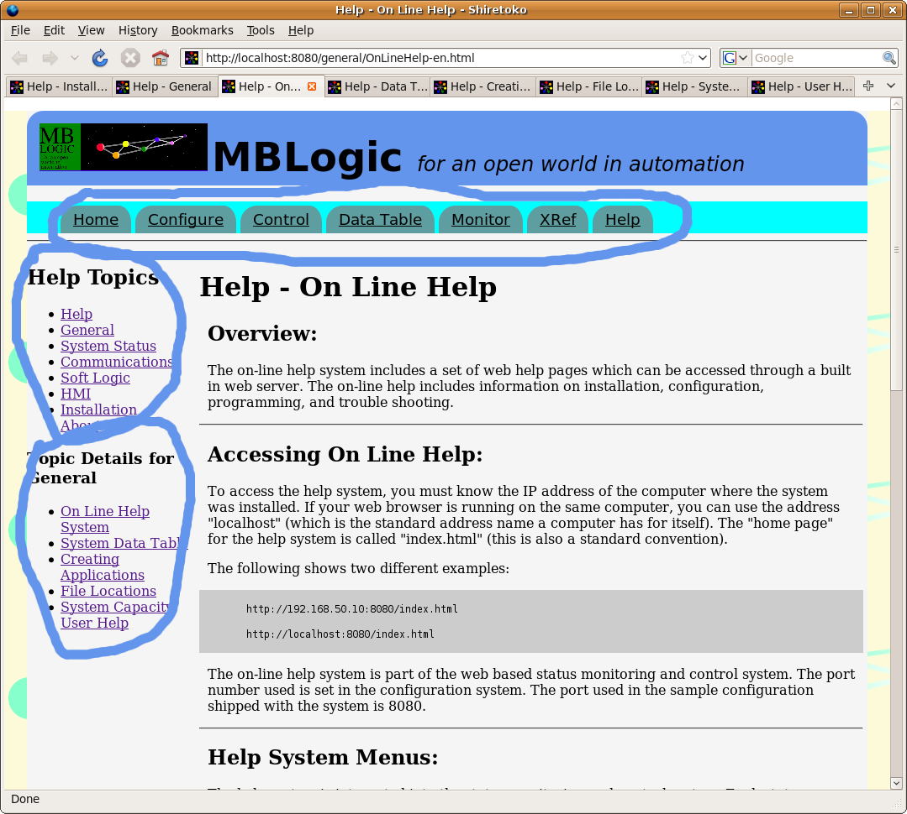

MBLogic
for an open world in automation
MBLogic
for an open world in automation
Help - On Line Help
Overview:
The on-line help system includes a set of web help pages which can be accessed through a built in web server. The on-line help includes information on installation, configuration, programming, and trouble shooting.
Accessing On Line Help:
To access the help system, you must know the IP address of the computer where the system was installed. If your web browser is running on the same computer, you can use the address "localhost" (which is the standard address name a computer has for itself). The "home page" for the help system is called "index.html" (this is also a standard convention).
The following shows two different examples:
http://192.168.50.10:8080/index.html http://localhost:8080/index.html
The on-line help system is part of the web based status monitoring and control system. The port number used is set in the configuration system. The port used in the sample configuration shipped with the system is 8080.
Help System Menus:
The help system is integrated into the status monitoring and control system. Each status monitoring and control web page has a link to the main help web page via a menu option titled "Help". Click on that menu item to view the main help web page. Each help web page includes the status monitoring menu allowing you to return to the status monitoring system at any time.
Each help web page contains a series of links to help topics on the left side of the page. Click on any of these links to see more details on that topic. Below the help topic links are further links to details on the particular help topic being viewed. These detailed help links will change as different topics are viewed.

What to do if the Help System is Disabled:
As shipped, the help system uses port 8080 for the help web server. However, the user has the ability to assign a different port number, or to disable the web server altogether. If the web server is disabled, the user will not be able to access the on line help (or the status monitoring system). If you wish to re-enable the web server, make sure the following lines are in the configuration file.
# Status web server. [status] type=tcpserver protocol=status port=8080
The configuration file is an ordinary text file and can be edited with any text editor. You may use a different port number if you wish. Just remember that your web browser will need to look for this alternate port number if you use it.